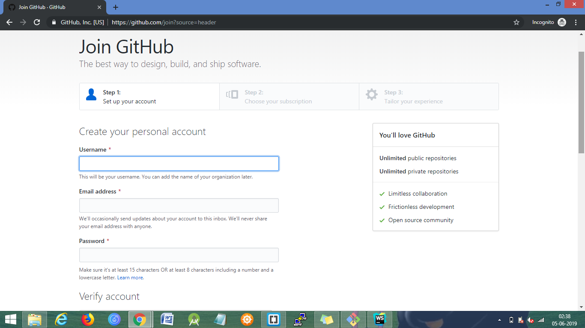
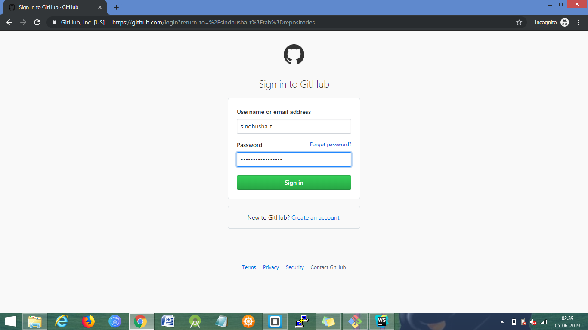
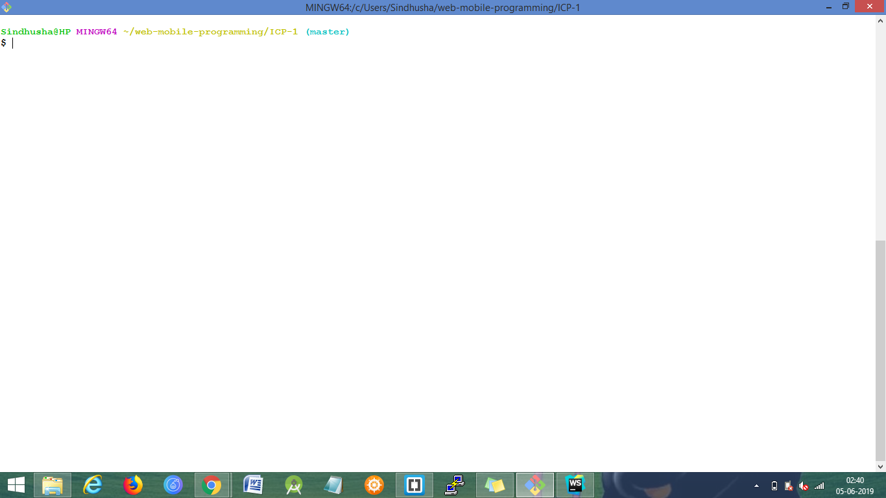
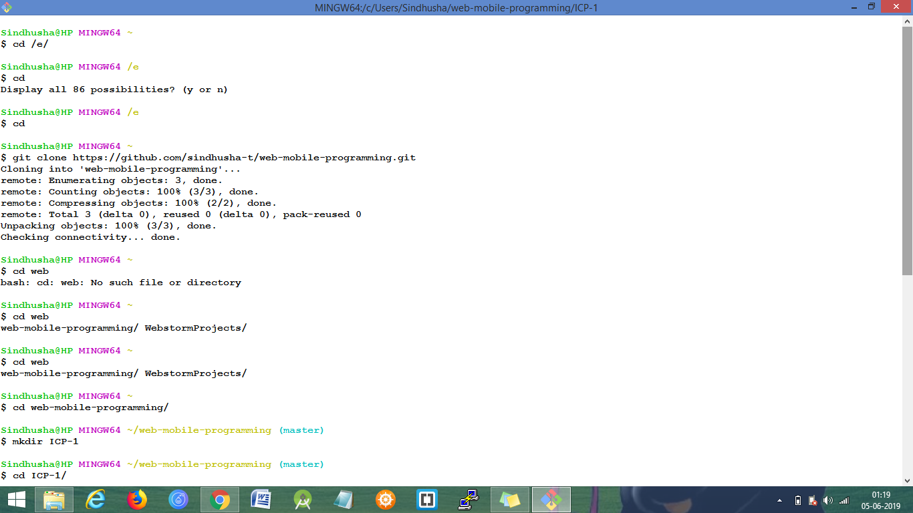

GitHub Installation:
-
Signing up in the GitHub website
 -
Logging into the github website using the Signed up account.
 -
Downloaded Git Bash and Installed - it is a command line console for accessing the Github remote respository.
 - Downloaded and Installed Git Desktop and logged into the account
- One can create a new repository in the github website or from either git bash or git desktop.
-
Cloning the remote repository in the local repository
 -
Commands for pushing the files to the remote repository